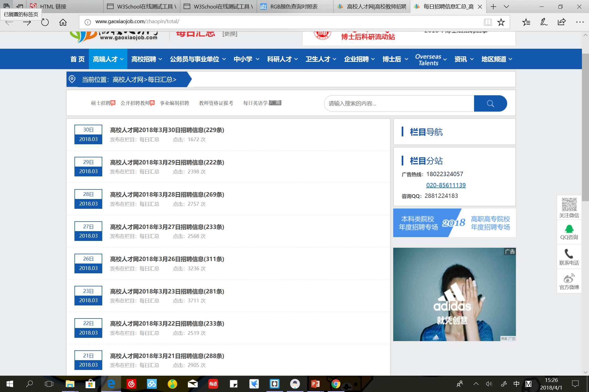

If you want to gather job information of schools, colleges and universities, Gaoxiaojob is the best option. This website offers information about jobs in schools and universities, from teaching staff and adminisitrative staff. If you want to be college teacher or counsellor, this is your choice.
Say that you would gradute soon. The following are the steps for you to make the best use of this website.
You can either register an account or not. (Because you cannot submit your resume on this website to a company anyway)
Click the Daily Summary

and you will see what new positions are open for that day.You can also select select job positions by city or region.
In all, this is a well-organized website of job offers in schools and universities. Do not hesitate if you are intrigued.